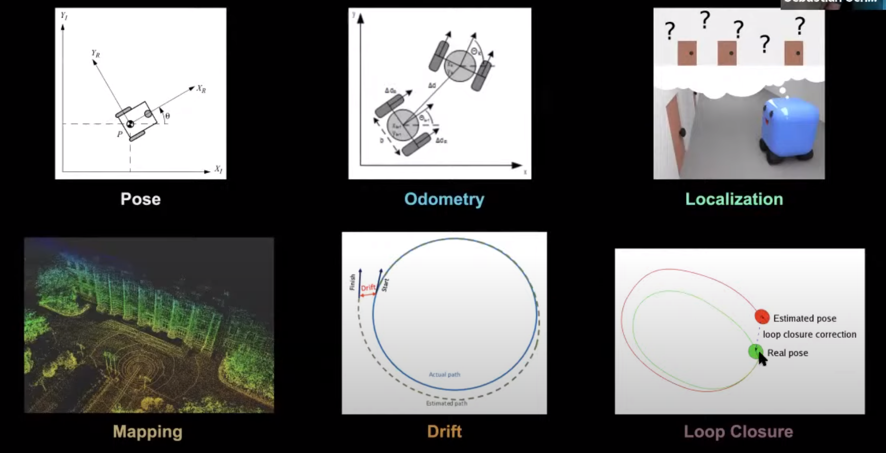
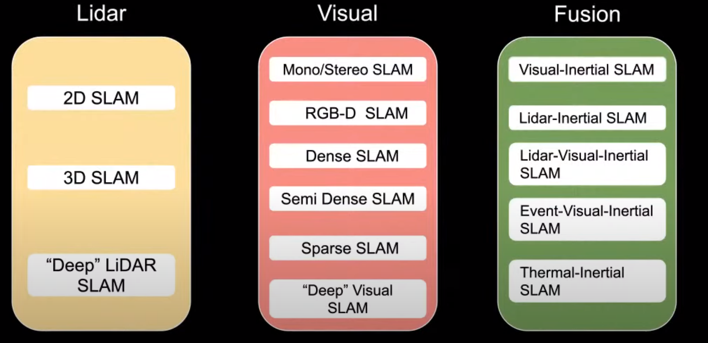
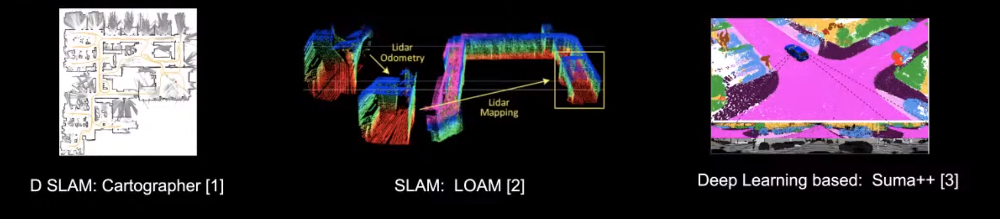
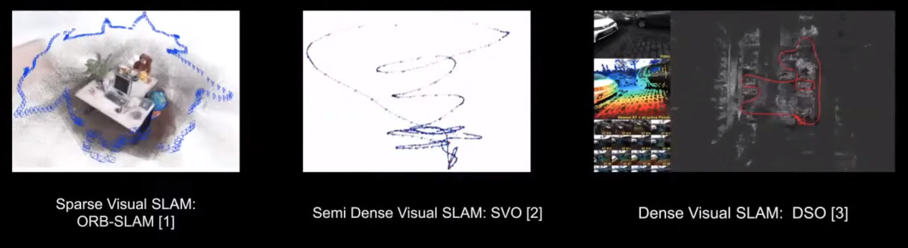
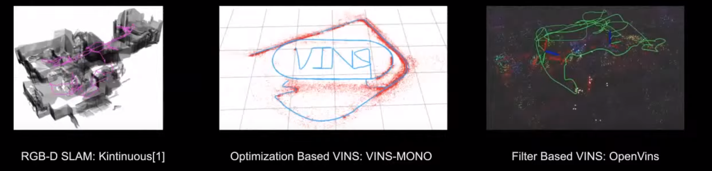
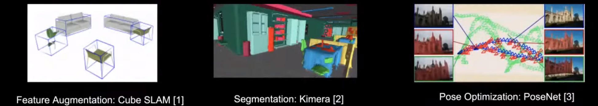
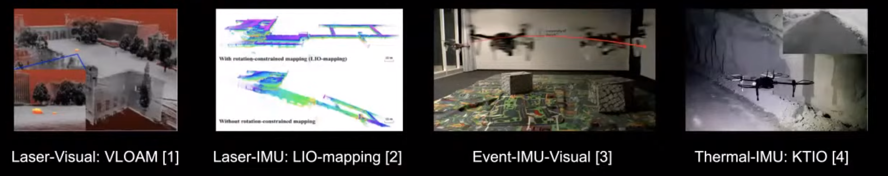
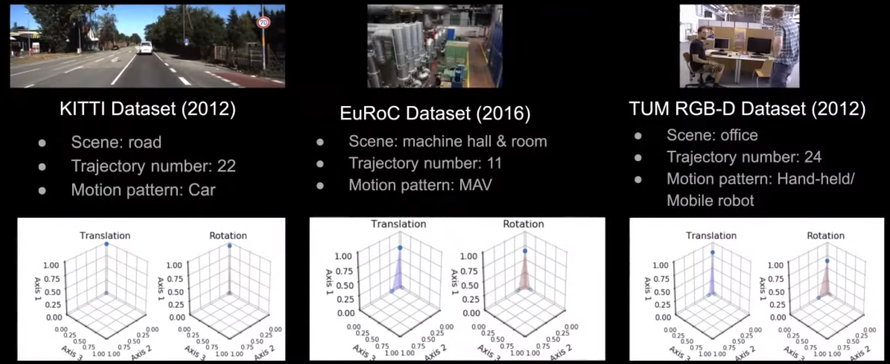
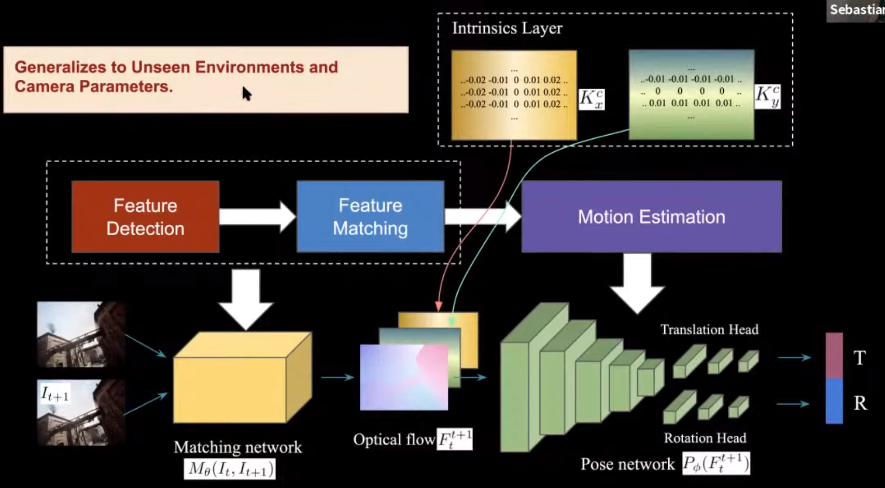
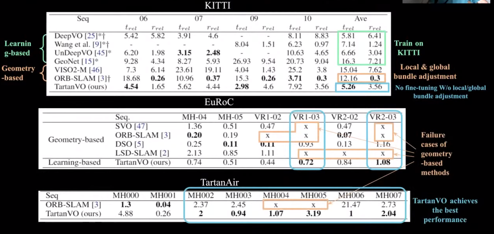

Challenges in SLAM - What's ahead (Prof. Sebastian Scherer, Tartan Series Seminar)
SLAM이 처음이라면…
- 선형대수 공부자료 - 링크
- 확률과 통계 공부자료 - 링크
- AirLab Summer School - 링크
- CVPR 2020 SLAM 워크샵 - 링크
SLAM에서 자주 쓰는 단어들

- Pose
- 위치 (Position) + 방향 (Orientation)
- Odometry
- 두 pose간의 상대적 차이
- Localization
- 내가 지도 상 어디에 있는지 풀어내는 문제
- Mapping
- 지도를 그려내는 문제
- Drift
- 연속적으로 위치를 추정할 때 쌓여가는 pose에 대한 오차
- Loop closure
- 동일한 장소로 돌아왔을 때 생기는 loop 내부에서 drift를 해소하는 방법
SLAM이란?
- 기술적 의미: Localization ⇄ Mapping 루프를 통해 위치/맵 추정을 하는 것.
- 먼저 나의 위치를 확인 (localization)
- 맵을 증축함 (mapping)
- 증축된 맵에서 나의 위치를 확인 (localization)
- 맵을 증축함 (mapping)
- …
- 일반적으로 보는 의미: 다양한 센서들로 다양한 추정을 함
- 카메라, 레이더, 라이다, GPS 등과 같이 다양한 센서 값을 어떻게 조합해서 위치/맵 추정을 할 것인가?
- 움직이는 객체가 있을 경우에는? Semantic 정보도 추출할 수 있는지?
- 종종 ‘위치 추정’ 기술을 쉽게 부르기 위해서 SLAM이라고 부르기도 함 (사실 알고보면 그냥 odometry나 mapping인 경우도 많음)
SLAM 기술의 발전 방향
- SLAM 성능
- Robustness의 발전
- Visual / geometric degeneration / challenging scenes (e.g. 안개, 비/눈, 화재, 탄광)
- Efficiency의 발전
- Lightweight image localization
- Dense reconstruction
- Accuracy의 발전
- High resolution
- Robustness의 발전
- 신기능
- Collaborative SLAM
- 여러 대의 agent가 돌아다니면서 각각 맵을 만드는 것.
- Semantic SLAM
- SLAM을 하면서 semantic 정보도 동시에 추출하는 것.
- High resolution map
- 거대 공간 (i.e. large scale)에서 mm단위의 정확한 맵 생성
- Unified map representation
- 카메라로 읽던, 라이다로 읽던, 레이더로 읽던 호환되는 맵
- Collaborative SLAM
SLAM 방법론 개요

위 이미지에서 설명된 Visual / LiDAR 외로 GPS, 레이더, sonar 등 다른 방식들도 있음.
LiDAR SLAM

- 굉장히 정확한 편
- 공간의 생김새에 따라 정확도/안정성이 변화함
Visual SLAM

- 저렴한 센서
- 공간에 존재하는 texture에 따라 정확도/안정성이 변화함
- 3가지 Visual SLAM 방법론이 존재함
- Sparse SLAM: Sparse local feature를 (e.g. SIFT, ORB) 기반으로 SLAM 추정
- Semi-dense SLAM : Sparse와 Dense SLAM의 중간
- Dense SLAM: 이미지 전체의 정보를 사용해서 SLAM 추정
RGB-D / Visual-Inertial SLAM

- 센서 1개만 쓰면 잘 안될때가 많다 (센서들마다 잘 되는곳/안되는 곳이 있다)
- 여러개의 센서를 써서 잘 안되는 부분을 커버한다.
- e.g. Visual + IMU 방식은 monocular 방식이 (i.e. 1개 카메라) 풀지 못하는 metric scale 복원 (i.e. 실제 m단위 스케일) 작업이 가능하다.
“Deep” Visual SLAM

- 뉴럴넷을 사용해서 state estimation을 진행
- 기존의 방식이 가지던 한계점을 뉴럴넷이 극복할 수 있을 것이라는 희망
- Semantic 정보를 추출해내려는 시도
- 현재 이러한 방식으로 풀려고 하는 문제들
- 텍스처가 전혀 없는 곳에서 SLAM을 할 수 있을까?
- High dynamic range 환경에서 SLAM을 할 수 있을까?
- 모션 블러가 있는 곳에서 SLAM을 할 수 있을까?
- 움직이는 객체가 많은 곳에서 SLAM을 할 수 있을까?
Multi-Sensor Fusion

- 여러개의 센서를 사용
- 많은 정보를 얻음
- 센서들마다 가진 단점을 서로 상쇄
SLAM 성능을 측정하는 방법
데이터셋

- KITTI, EuRoC, TUM 데이터셋은 SLAM 연구자들 사이에서 많이 쓰이는 데이터셋임.
- 하지만 위 데이터셋은 굉장히 단조로움
- 환경, 라벨, 모션 패턴이 모두 단조로움.
- 다양한 데이터가 없기 때문에, 위 데이터셋으로 뉴럴넷을 학습할 경우 특정 컨디션에 오버핏 할 가능성이 높음.
- 그러니 Tartan Dataset을 써라! (결국 본인 랩실 홍보 ㅋㅋ)
- Urban, rural, domestic, public, scifi 씬 등 20개 환경 구비
- RGB, Depth, Segmentation, Flow, Pose 등 데이터 구비
- Random translation / rotation의 500+ 모션 구비
- 빡센 환경 구비 (e.g. 연기, 안개, 어두운 밤 + 밝은 불빛, 비, 눈)
측정 metric
- Absolute Trajectory Error (ATE)**와 **Relative Pose Error (RPE) 기반으로 성능을 측정하는 경우가 많음.
- ATE와 RPE는 중간에 끊기는 데이터 (i.e. tracking lost)에 대응하지 못함.
- Challenging scene에서는 끊기는 경우가 허다함.
- AirLab에서는 robustness에 대한 새로운 척도를 제안
- Valid Rate = Length of valid trajectory / Total length
- Valid = Successfully initialised + not lose tracking
- ‘Valid’ 척도는 사실 굉장히 주관적임…
- 더 좋은 metric을 만들려고 연구중이라고 함.
- 어찌되었건 이 metric으로 봤었을 때, ORB-SLAM은 KITTI 벤치마크 기준 잘된다고 알려져있으나 Tartan Dataset에서는 완전 말아먹는 모습을 보임.
- TartanAir-V2를 만들고 있다고 함.
- 더 많은 환경을 만들 예정.
- IMU, LiDAR, Spherical, Fisheye, Event, Radar 등을 추가할 예정.
- Dynamic object를 넣을 예정
- GRound robot motion 패턴도 추가할 예정.
TartanVO: Learning-based Visual Odometry


- TartanAir 처럼 다양한 환경/모션 정보가 있는 데이터셋이 있으니, SLAM 뉴럴넷을 학습해볼 수 있겠다.
- TartanVO
- 기존의 Feature detection / matching 단계를 하나의 뉴럴넷으로 대체
- 기존의 Motion estimation 과정을 deep optical flow + pose 뉴럴넷으로 대체
- 극심한 모션 블러에도 실패하지 않음 (기존의 SLAM 방식은 tracking lost가 남)
Super Odometry: IMU-centric LiDAR-Visual-Inertial Estimator for Challenging Environments
Related Posts